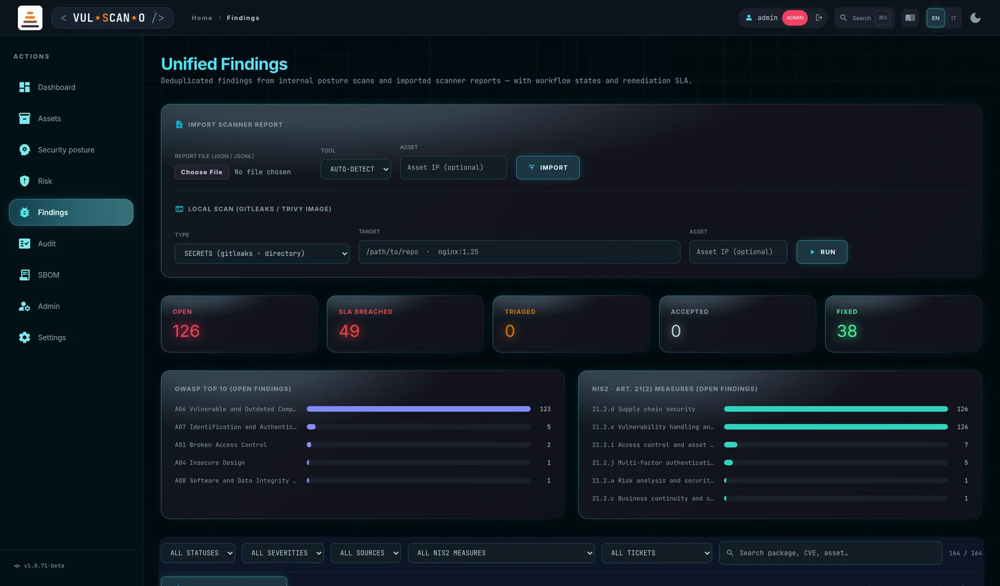
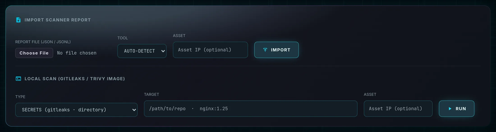
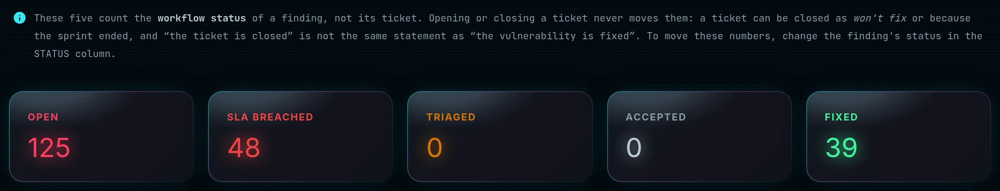
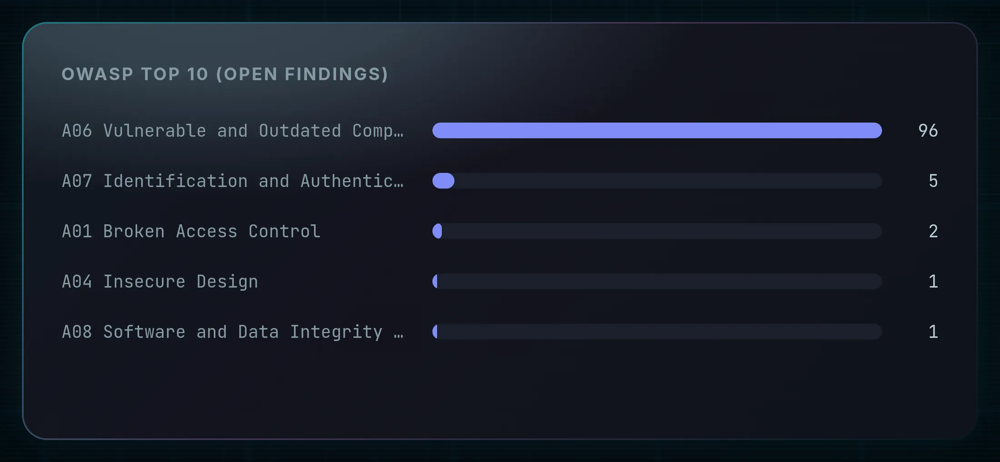
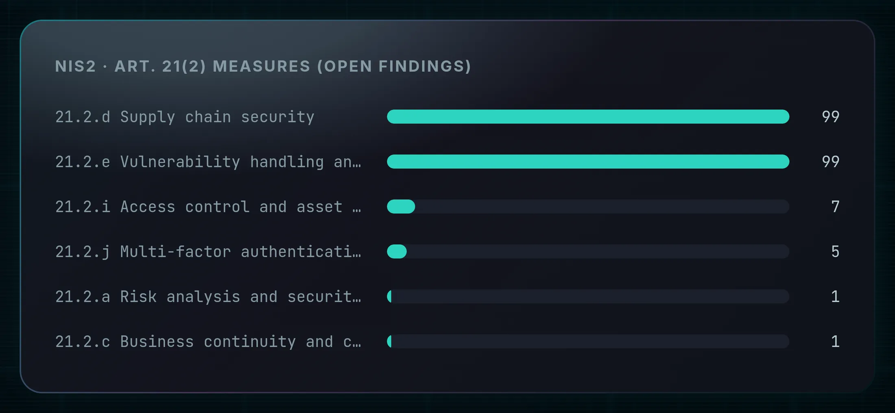
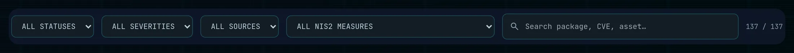
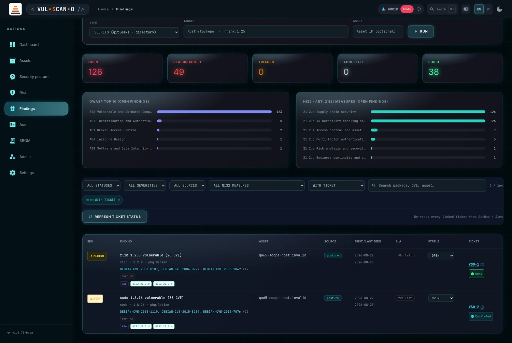
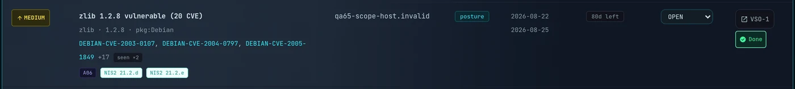

Unified FindingsFindings unificati
The remediation work queue and the ASPM heart of the product. Every defect — discovered by this application or imported from a third-party scanner — lands here as a deduplicated finding with a status, a deadline and, if you want it, a ticket.
La coda di lavoro della remediation e il cuore ASPM del prodotto. Ogni difetto — scoperto da questa applicazione o importato da uno scanner di terze parti — arriva qui come finding deduplicato con uno stato, una scadenza e, se lo desideri, un ticket.
Page OverviewPanoramica read: all · write: admin, manager, editor (in cone)lettura: tutti · scrittura: admin, manager, editor (nel cono)
The subtitle states the ambition: “Deduplicated findings from internal posture scans and imported scanner reports — with workflow states and remediation SLA.” In other words, this page exists so that a vulnerability reported by three different tools is one piece of work, with one owner and one deadline, rather than three tickets nobody closes.
Il sottotitolo dichiara l'obiettivo: «Deduplicated findings from internal posture scans and imported scanner reports — with workflow states and remediation SLA.» In altre parole, questa pagina esiste perché una vulnerabilità segnalata da tre strumenti diversi sia un solo lavoro, con un solo responsabile e una sola scadenza, invece di tre ticket che nessuno chiude.

Deduplication, workflow and SLADeduplica, workflow e SLA
1Fingerprint deduplicationDeduplica per fingerprint
Identity is computed from (asset, package, primary CVE) — or from the location, for findings without a
CVE such as a hardcoded secret. The source is deliberately not part of the key. The same
defect reported by Trivy and Grype is one finding with source trivy+grype and an
incremented seen ×n counter, not two rows to triage twice. Internal posture findings
flow into the same lifecycle automatically on every run.
L'identità è calcolata da (asset, pacchetto, CVE principale) — o dalla posizione, per i finding senza
CVE come un segreto hardcoded. La sorgente non fa volutamente parte della chiave. Lo stesso
difetto segnalato da Trivy e da Grype è un unico finding con sorgente trivy+grype e un
contatore seen ×n incrementato, non due righe da esaminare due volte. I finding
interni di postura confluiscono automaticamente nello stesso ciclo di vita a ogni run.
2Workflow statesStati del workflow
| StatusStato | MeaningSignificato | AutomationAutomatismi |
|---|---|---|
| OPEN | Newly observed, not yet triaged.Osservato per la prima volta, non ancora triato. | Assigned on first observation, together with an SLA due date derived from the severity.Assegnato alla prima osservazione, insieme a una scadenza SLA derivata dalla severità. |
| TRIAGED | Reviewed, work planned.Esaminato, lavoro pianificato. | Manual.Manuale. |
| ACCEPTED | Risk accepted — a deliberate decision not to fix.Rischio accettato — decisione deliberata di non correggere. | Excluded from SLA breach counting, so accepted risk stops polluting your overdue number.Escluso dal conteggio delle violazioni SLA, così il rischio accettato smette di inquinare il numero dei ritardi. |
| FIXED | Remediated.Corretto. | Posture findings no longer observed in the asset's latest run are auto-closed. A fixed finding that reappears in a later report is automatically reopened, with a visible reopened ×n counter. I finding di postura non più osservati nell'ultima run dell'asset vengono chiusi automaticamente. Un finding corretto che ricompare in un report successivo viene riaperto automaticamente, con un contatore visibile reopened ×n. |
Transitions are free — any status to any status — through PATCH /api/findings/{id}/status.
Le transizioni sono libere — da qualsiasi stato a qualsiasi altro — tramite PATCH /api/findings/{id}/status.
The table you see holds only the current status: an update overwrites the previous one. Every transition is therefore also appended to a separate, never-rewritten ledger recording who changed what and when — including the automatic closures and reopenings above, which are the ones an auditor questions first. That ledger is what lets you reconstruct the state on any past date: see Audit evidence.
La tabella che vedi contiene solo lo stato attuale: un aggiornamento sovrascrive il precedente. Ogni transizione viene perciò aggiunta anche a un registro separato e mai riscritto, che annota chi ha cambiato cosa e quando — comprese le chiusure e riaperture automatiche qui sopra, quelle che un auditor contesta per prime. È quel registro a permettere di ricostruire lo stato a qualsiasi data passata: vedi Evidenza per audit.
3Remediation SLASLA di remediation
| SeveritySeverità | Default daysGiorni predefiniti | ConfigurationConfigurazione |
|---|---|---|
| Critical | 7 | sla section of config.jsonsezione di config.json |
| High | 30 | |
| Medium | 90 | |
| Low | 180 | |
| Unknown | 90 |
The due date is computed at first observation, not at each sighting — so a finding you have been ignoring for two months does not quietly get a fresh deadline. Past due and neither fixed nor accepted produces the BREACHED badge.
La scadenza è calcolata alla prima osservazione, non a ogni avvistamento — così un finding ignorato per due mesi non riceve silenziosamente una scadenza nuova. Scaduto e né corretto né accettato produce il badge BREACHED.
IMPORT SCANNER REPORT

Features BreakdownDettaglio funzionalità
| ControlControllo | BehaviourComportamento |
|---|---|
| REPORT FILE (JSON / JSONL) | A file picker accepting .json and .jsonl, plus application/json and plain text.Un selettore file che accetta .json e .jsonl, oltre a application/json e testo semplice. |
| TOOL | auto by default — the format is detected from the payload itself. Force a specific parser only when auto-detection fails, for instance with a heavily post-processed report.auto di default — il formato viene rilevato dal contenuto stesso. Forza un parser specifico solo quando il rilevamento automatico fallisce, per esempio con un report pesantemente post-elaborato. |
| Asset IP (optional) | Attributes the imported findings to an inventory asset. This is what makes them appear in /risk and inside cone-scoped views — without it the findings exist but belong to no host.Attribuisce i finding importati a un asset dell'inventario. È ciò che li fa comparire in /risk e nelle viste limitate al cono — senza, i finding esistono ma non appartengono a nessun host. |
| IMPORT | POST /api/findings/import. Result line: “Imported: {parsed} findings from {tool} — {new} new, {updated} updated, {reopened} reopened.” On failure: “Import failed: {msg}”.POST /api/findings/import. Riga di risultato: «Imported: {parsed} findings from {tool} — {new} new, {updated} updated, {reopened} reopened.» In caso di errore: «Import failed: {msg}». |
Supported toolsStrumenti supportati
| ToolStrumento | Produce the report withGenera il report con | Content ingestedContenuto acquisito |
|---|---|---|
| Trivy | trivy … -f json | Package and image vulnerabilities, plus secrets found in layers.Vulnerabilità di pacchetti e immagini, più segreti trovati nei layer. |
| Grype | grype … -o json | Package and image vulnerabilities.Vulnerabilità di pacchetti e immagini. |
| Nuclei | JSON export or JSONLExport JSON o JSONL | Template-based host findings.Finding su host basati su template. |
| Semgrep | semgrep --json | SAST code findings.Finding SAST sul codice. |
| Gitleaks | gitleaks detect -f json | Hardcoded secrets in a repository or directory.Segreti hardcoded in un repository o in una directory. |
| Trufflehog | trufflehog … --json | Secrets — rated CRITICAL when verified live.Segreti — classificati CRITICAL quando verificati in tempo reale. |
LOCAL SCAN (GITLEAKS / TRIVY IMAGE)
Features BreakdownDettaglio funzionalità
| ControlControllo | BehaviourComportamento |
|---|---|
| TYPE | Either SECRETS (gitleaks · directory) or CONTAINER IMAGE (trivy · vuln+secret).O SECRETS (gitleaks · directory) oppure CONTAINER IMAGE (trivy · vuln+secret). |
| TARGET | A filesystem path for gitleaks (/path/to/repo) or an image reference for Trivy (nginx:1.25) — the placeholder shows both forms.Un percorso sul filesystem per gitleaks (/path/to/repo) o un riferimento immagine per Trivy (nginx:1.25) — il placeholder mostra entrambe le forme. |
| Asset IP (optional) | Attribution. Mandatory for editors, and it must fall inside their visibility cone.Attribuzione. Obbligatoria per gli editor e deve rientrare nel loro cono di visibilità. |
| RUN | POST /api/findings/scan-local — runs the scanner on the server and ingests its report through the same pipeline as an upload. Shows “running scanner…” while it works.POST /api/findings/scan-local — esegue lo scanner sul server e acquisisce il report attraverso la stessa pipeline di un upload. Mostra «running scanner…» durante l'esecuzione. |
| Missing binaryBinario mancante | Returns 400 with installation instructions rather than failing opaquely. Neither gitleaks nor Trivy is a hard dependency of the application.Restituisce 400 con le istruzioni di installazione invece di fallire in modo opaco. Né gitleaks né Trivy sono dipendenze obbligatorie dell'applicazione. |
KPIs, compliance bars and filtersKPI, barre di conformità e filtri

OPEN · SLA BREACHED · TRIAGED · ACCEPTED · FIXED. In a weekly report, SLA BREACHED is the number that matters: OPEN measures how much exists, BREACHED measures how much is late.
OPEN · SLA BREACHED · TRIAGED · ACCEPTED · FIXED. In un report settimanale il numero che conta è SLA BREACHED: OPEN misura quanto esiste, BREACHED misura quanto è in ritardo.
4Compliance aggregationAggregazione di conformità


Compliance references are computed at runtime, not stored as a manual tag: the CWE identifiers come from the report metadata, the OWASP Top 10 2021 category is derived from the CWE map or from source heuristics, and the NIS2 mapping targets the minimum measures of article 21(2) of EU directive 2022/2555. Because it is computed live, the bars always describe the findings that are open now — which is exactly what an auditor asks for.
I riferimenti di conformità sono calcolati a runtime, non memorizzati come etichetta manuale: gli identificativi CWE provengono dai metadati del report, la categoria OWASP Top 10 2021 è derivata dalla mappa CWE o da euristiche sulla sorgente, e la mappatura NIS2 punta alle misure minime dell'articolo 21(2) della direttiva UE 2022/2555. Essendo calcolate in tempo reale, le barre descrivono sempre i finding aperti adesso — che è esattamente ciò che chiede un auditor.
5Filter rowRiga dei filtri

- ALL STATUSES · ALL SEVERITIES · ALL SOURCES · ALL NIS2 MEASURES — four dropdowns that combine.ALL STATUSES · ALL SEVERITIES · ALL SOURCES · ALL NIS2 MEASURES — quattro menu che si combinano.
- Search — “Search package, CVE, asset…”, applied instantly.Ricerca — «Search package, CVE, asset…», applicata istantaneamente.
- Active chips — every applied filter becomes a removable chip labelled Status, Severity, Source or Search, with CLEAR ALL to reset everything. A live row count sits beside them, so you always know how much you are looking at.Chip attivi — ogni filtro applicato diventa un chip rimovibile etichettato Status, Severity, Source o Search, con CLEAR ALL per azzerare tutto. Accanto c'è un conteggio righe live, così sai sempre quanto stai guardando.
The findings tableLa tabella dei findings

Features BreakdownDettaglio funzionalità
| ColumnColonna | Content and behaviourContenuto e comportamento |
|---|---|
| SEV | Severity badge, colour-coded.Badge di severità, codificato a colori. |
| FINDING | Title, package or rule, CVE identifiers, CWE and the derived compliance tags.Titolo, pacchetto o regola, identificativi CVE, CWE e le etichette di conformità derivate. |
| ASSET | The attributed inventory host, or blank for an unattributed import.L'host di inventario attribuito, o vuoto per un import senza attribuzione. |
| SOURCE | The originating tool or tools — posture, trivy, trivy+grype, semgrep… A combined source is the visible proof that deduplication worked.Lo strumento o gli strumenti di origine — posture, trivy, trivy+grype, semgrep… Una sorgente combinata è la prova visibile che la deduplica ha funzionato. |
| FIRST / LAST SEEN | The observation window, with the badges seen ×n and reopened ×n.La finestra di osservazione, con i badge seen ×n e reopened ×n. |
| SLA | “{d}d left” while there is time, or BREACHED {d}d once the deadline has passed.«{d}d left» finché c'è tempo, oppure BREACHED {d}d quando la scadenza è passata. |
| STATUS | An inline dropdown. Changing it fires PATCH /api/findings/{id}/status immediately — no save button, no modal.Un menu a tendina in linea. Cambiandolo parte subito PATCH /api/findings/{id}/status — nessun pulsante di salvataggio, nessuna finestra modale. |
| TICKET |
CREATE opens a remediation ticket through POST /api/findings/{id}/ticket; afterwards the cell becomes a link to the issue. Title, severity, asset, CVE, SLA and fingerprint all go into the ticket body, so the receiving team has the context without opening this application. Requires a provider configured in Settings → TICKETING. Messages: “Ticket created: {ref}”, “Ticket already linked to this finding”, “Ticket not created: {msg}”.
CREATE apre un ticket di remediation tramite POST /api/findings/{id}/ticket; dopo, la cella diventa un link all'issue. Titolo, severità, asset, CVE, SLA e fingerprint finiscono nel corpo del ticket, così il team ricevente ha il contesto senza aprire questa applicazione. Richiede un provider configurato in Impostazioni → TICKETING. Messaggi: «Ticket created: {ref}», «Ticket already linked to this finding», «Ticket not created: {msg}».
|

Empty state: “No findings. Run a posture scan or import a scanner report.”
Stato vuoto: «No findings. Run a posture scan or import a scanner report.»
Procedures and expected outcomesProcedure e risultati attesi
How It Works — the triage cycleCome funziona — il ciclo di triage
- Open Findings and click the SLA BREACHED KPI first — overdue work outranks everything else.Apri Findings e clicca per primo il KPI SLA BREACHED — il lavoro in ritardo ha priorità su tutto.
- Then filter by CRITICAL severity and OPEN status to get today's queue.Poi filtra per severità CRITICAL e stato OPEN per ottenere la coda di oggi.
- Open a finding and read its CVEs, package and compliance tags.Apri un finding e leggi CVE, pacchetto ed etichette di conformità.
- Decide: fixing it now → TRIAGED; not fixing it → ACCEPTED (it leaves the breach count); already fixed → FIXED.Decidi: lo correggo ora → TRIAGED; non lo correggo → ACCEPTED (esce dal conteggio delle violazioni); già corretto → FIXED.
- Press CREATE in the TICKET column to hand the work to the owning team; the finding keeps the ticket reference.Premi CREATE nella colonna TICKET per passare il lavoro al team responsabile; il finding conserva il riferimento al ticket.
- Re-run the posture scan after the patch window. Genuinely fixed posture findings auto-close; anything that reappears is reopened with a visible counter.Riesegui la scansione di postura dopo la finestra di patch. I finding di postura davvero risolti si chiudono da soli; ciò che ricompare viene riaperto con un contatore visibile.
How It Works — import a CI scanner reportCome funziona — importare un report da CI
- Generate the report, for example
trivy image -f json -o report.json nginx:1.25.Genera il report, per esempiotrivy image -f json -o report.json nginx:1.25. - In IMPORT SCANNER REPORT choose the file and leave TOOL on
auto.In IMPORT SCANNER REPORT scegli il file e lascia TOOL suauto. - Enter the Asset IP if the findings belong to a known host.Inserisci l'Asset IP se i finding appartengono a un host noto.
- Press IMPORT and read the counts in the result line.Premi IMPORT e leggi i conteggi nella riga di risultato.
- As an editor importing a batch that contains out-of-scope hosts, those rows are silently skipped and reported as
skipped_out_of_scope— CI pipelines keep working instead of erroring.Come editor, importando un lotto che contiene host fuori dal tuo cono, quelle righe vengono saltate in silenzio e riportate comeskipped_out_of_scope— le pipeline CI continuano a funzionare invece di fallire.
Expected OutcomeRisultato atteso
A single deduplicated queue in which every row carries a status, a deadline and — when you want it — a link to real work in a real tracker. Importing the same report twice changes nothing except the seen ×n counter. The OWASP and NIS2 bars give you a compliance narrative straight from live data, and the KPI strip is the number you report weekly.
Un'unica coda deduplicata in cui ogni riga porta uno stato, una scadenza e — quando lo vuoi — un link a lavoro reale in un tracker reale. Importare due volte lo stesso report non cambia nulla se non il contatore seen ×n. Le barre OWASP e NIS2 offrono una narrazione di conformità che nasce dai dati vivi, e la striscia KPI è il numero che riporti ogni settimana.